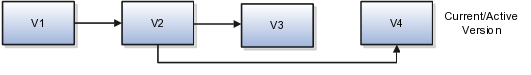

Understanding concepts
Concepts bridge the gap between ideation and production. With CDM, you can:
- Generate, capture, analyze, and approve product concepts that address your company's strategic goals
- Transfer approved concepts directly to PLM solutions for prototype planning, detailed design, and prototyping
The following use-cases highlight how you can use CDM to suit your role:
- Product architects: Use concepts to align toward strategy goals like optimal material and development costs, features, roadmap, partnership objectives, and future technology migration.
- Product managers: Compare and optimize competing concepts to support product strategy goals, and securely share the results with existing and potential supply chain partners or external design teams.
- Executives: Trace concepts in detail from ideas and requirements to finished products, for engineering clarifications, process analysis and improvement activities.
Concept creation methods
Create a concept using any of the following options:
- From ideas and formal requirements
- From existing concepts or concept templates (using Save-As)
Create a copy of an original concept and its proposal for the following advantages:- Reuse specific concept versions
- Select a different concept type from the original
- Retain or remove content details of the original concept, including structure, attachments and designs, requirements, references, and team
- Retain or remove content details of the original proposal, including cost, revenue, resources, attachments, references, and projects.
You can copy concept-type specific attributes only if the source and target concept types match.
- As independent concepts
Create an independent concept to own it entirely. This enables you to define concept structures that fulfil ideas and requirements specific to your prototypes and future designs.
Concept attributes
Concept Type: Preset values that define the grouping and search criteria of concepts. Choose among the preset values when you create a concept. You cannot modify this value in the concept later.
To create unique concept types, contact your system administrator.
Concept Status: Predefined states in a workflow that define the actions you can take at each stage. The following table details the different states:
| Status | Workflow Stage |
|---|---|
| Draft | Design. This is the default status of a concept you create. As the concept owner, you can modify the concept structure as you require. |
| Submitted | Review. Submit a concept for review once you complete your concept design. You cannot make any further changes to the concept. |
| Approved | Approved. You can move an approved concept to a PLM system for production. The data of an approved concept continues to be available in CDM, as an item structure. |
| Rejected | Design. A concept that has been rejected in the Review stage reverts back to the Draft status. You can modify it if you are the concept owner. |
Concept versions
Create and use versions of a concept to save and track the progress of your concept design.
Points to remember:
- When you create a version of a concept, all the data of the source concept is copied into the newer version, and it is automatically numbered to the respective highest version number available.
- All previous versions are rendered read-only.
- You can edit only the latest version of a concept.
- To reuse and edit an older concept version, create a version from it, or create a copy of it using Save As.
The following image shows how concept versions are numbered.

Note
Concepts and proposals can have versions independent of each other.
What are requirements and proposals?
Requirements, concepts, and proposals are elements of the IM product suite, and work together intrinsically.
Requirements are design specifications that serve as inputs for concepts. Requirements also help measure the completeness of a concept.
You can also build requirements specifications from concept designs, for use in future product redesigning activities.
Concepts address the technical design aspect of a product. You cannot delete a concept which has a requirement assigned to it, without disassociating them first.
Proposals contain the business information for concepts. When you create a concept, CDM creates a proposal of the same name; the converse applies as well. A concept and a proposal cannot contain sufficient information individually to justify a new project, and are hence created alongside each other.
When you delete a proposal, the corresponding concept is also deleted.
Note
You cannot delete a concept-proposal pair if the concept is in Submitted or Approved state. Deletion is possible only if both, the proposal and concept, are in Draft or Rejected state.
For more information on requirements and proposals, see {links to IM product guides}.